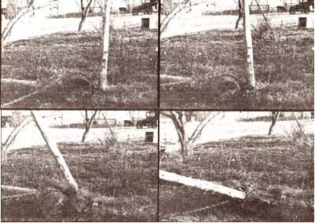

The folks who originally fenced in my family's place enclosed the fruit trees along with the pasture! We, however, thought it would be better to have the trees in our dooryard. That way, they'd provide nice shade to sit under, and the fruit would be easier to pick with the surrounding grass mowed short. Therefore, we concluded that we'd move the barrier ... someday.
Well, after our calf ate enough fallen peaches to swell up like a bass drum, we decided to give our fence-moving job a higher priority. So I carefully took down all the wire ... and then stood there wondering how to pull out the posts without ruining them.
I finally decided to ask an old farmer down the road for help, and he told me to drive his tractor to my place, and he'd meet me there with a chain.
When he arrived, he asked for a fat log, and I brought the biggest one I could find to the first post. My instructor then hooked the chain tightly around the post, at a point close to the ground ... rolled the log up to the pole ... put the chain over the log ... and secured its free end to the tractor. As the vehicle moved forward, the chain pulled the post first up, then right over. The log did the trick . . . it directed the pulling force upward first, to loosen the cedar fence-hanger, before pulling it forward.
We yanked out a row of fenceposts using the log and chain, and that venerable John Deere tractor. Small posts came out at an idle ... while even the big ones just made old "Dear John" pop once or twice. All in all, I was amazed at the ease with which my fence disappeared.
Of course, I must point out that we live in New England, where rocks are both the most successful crop and the posthole-digger's dread (thus the poles probably weren't set as deep as they might be in another region), and that these posts were only five years old and still sturdy. I think the principle would apply anywhere, however ... and if a largerdiameter log were used, even longer poles could likely be pulled.
Now, if only someone would show me an easy way to dig new postholes through three feet of rocks, I'd be all set!
|
 |
|
|